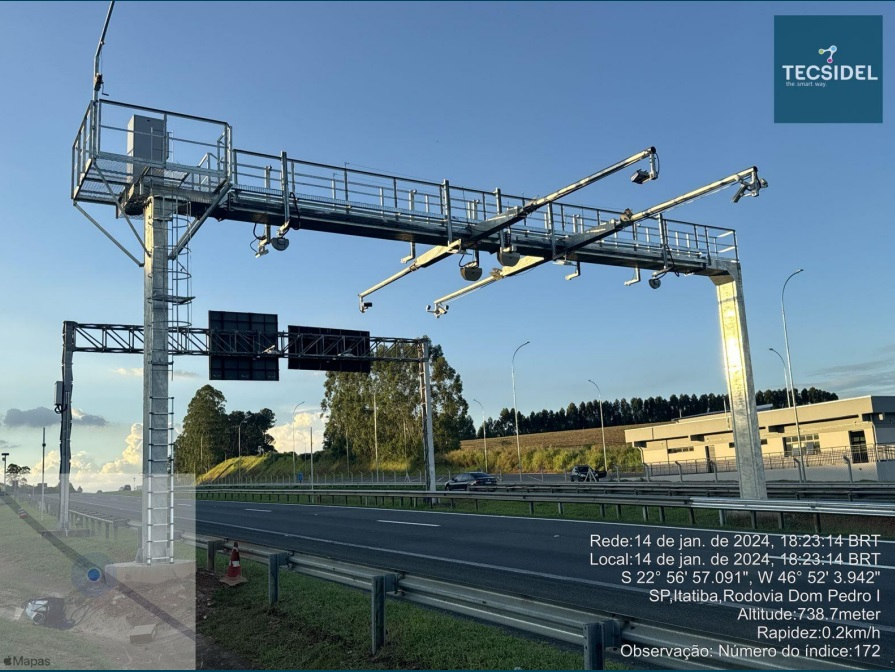

Sobre a Tecsidel
"A Tecsidel atuou no maior projeto de atualização Tecnológica do país, envolvendo 06 concessionárias, 40 praças com mais de 700 vias migradas, fornecendo a solução de pedágio níveis 1 e 2 e integração com N3/SAP próprio da Arteris. O projeto no modelo Turn-key foi realizado dentro dos prazos acordados e a sinergia entre as equipes consolidou a parceria que permanece ativa no pós-venda. Esta atualização tecnológica teve ampla aceitação pelas agências reguladoras Artesp e ANTT, comprovando significamente a melhoria dos processos de arrecadação, sendo que as rodovias federais da Arteris foram as primeiras a utilizar o protocolo Mensageria no âmbito federal”
Luiz Eduardo Ritzmann
Diretoria Arteris
